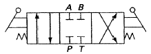

건설기계정비기능장 (2004-07-18 기출문제)
1과목: 임의 구분
1. 행정체적이 240cc이고 압축비가 9일 때 연소실 체적은 몇 cc인가?
- 20cc
- 30cc
- 40cc
- 65cc
(정답률: 85%)

2. 디젤기관에서 질소 산화물(NOX)의 발생을 억제하려면 어떻게 해야 하는가?
- 흡기온도를 높인다.
- 산소(O2)의 농도를 낮춘다.
- 연소온도를 높인다.
- 반응시간을 길게한다.
(정답률: 62%)
3. 다음은 밸브 겹침을 설명한 것이다. 맞는 것은?
- 흡기밸브와 배기밸브가 동시에 열리는 각도
- 실린더 헤드에 밸브가 2개 설치되는 것
- 밸브가 시이트에 충돌하여 튀는 현상
- 밸브시트가 마모되어 단층이 생기는 것
(정답률: 75%)
4. 제동 열효율 38%인 디젤기관에서 저위 발열량 10,100kcal/kg 인 경유를 사용할 때 연료소비율은 몇 g/(PS.h)인가?
- 155
- 165
- 176
- 186
(정답률: 42%)
5. 전자제어 기관에서 산소센서가 피드백이 되는 조건은?
- 냉각수온이 낮을 때
- 시동시
- 연료차단시
- 공전시
(정답률: 74%)
6. 크랭크축 메인저널의 외경이 규정보다 작을 때 일어나는 현상으로 가장 적당한 것은?
- 오일유압의 압력저하로 적당한 오일의 공급량이 적어 오일의 오염도가 적다.
- 오일간극이 적어 베어링의 소결이 생긴다.
- 오일압력의 상승으로 각부에 윤활공급이 확실하다.
- 운행중 소음이 많이 발생된다.
(정답률: 64%)
7. 디젤기관의 정지시 기계식 가바나(Governor)의 연료 조정랙크는 어떤 위치로 되어 있는가?
- 시동 연료 위치
- 최대 연료 위치
- 저속 공회전 위치
- 연료 증가 위치
(정답률: 61%)
8. 디젤엔진의 공기여과기가 막혔을 때 나타나는 현상이 아닌 것은?
- 가속 불량
- 연료소비 과다
- 매연 과다배출
- 엔진오일 연소
(정답률: 54%)
9. 신품 방열기의 냉각수 량이 18ℓ이고 사용 중인 방열기의 냉각수 량이 13.5ℓ였다면 이 방열기의 코어 막힘률과 사용 여부는?
- 코어의 막힘률은 25%이고 사용 가능하다.
- 코어의 막힘률은 33%이고 사용 가능하다.
- 코어의 막힘률은 25%이고 수리 또는 교환해야 한다.
- 코어의 막힘률은 33%이고 수리 또는 교환해야 한다.
(정답률: 69%)
10. 윤활유 교환시기를 단축시키는 요인이 아닌 것은?
- 빈번한 공운전
- 지나치게 높은 회전속도
- 지나치게 높은 온도
- 먼지가 없는 현장에서의 장시간 작업
(정답률: 62%)
11. 다음 중 2사이클 기관에서 루프 소기방식의 설명이 틀린 것은?
- 소기구와 배기구가 대칭으로 배치되어 있다.
- 피스톤에 의해 소기와 배기가 제어된다.
- 소기는 실린더 안을 반전하여 흐른다.
- 횡단 소기식 보다 효율이 좋다.
(정답률: 45%)
12. 터보과급기관에서 응답성 지연(Turbo lag) 현상이 발생될 때 나타나는 현상이 아닌 것은?
- 출력감소
- 가속력 부족
- 매연 증가
- 연료 소모량 감소
(정답률: 59%)
13. 디젤기관의 분사특성에서 간결분사를 설명하였다. 맞는 것은?
- 잔압은 대기압 이하이고 주기성이 없는 분사
- 정(+)의 잔압의 변동에 의해 주기성이 없는 분사
- 부(-)의 잔압의 변동에 의해 주기성이 없는 분사
- 분사하지 않는 사이클이 있는 분사
(정답률: 60%)
14. 실린더 헤드의 점검, 정비에 대한 설명으로 옳지 못한 것은?
- 실린더 헤드 볼트의 불균일한 조임 때문에 냉각수에 기포가 발생한다.
- 실린더 헤드를 수리하였을 경우 반드시 개스킷도 신품으로 교환한다.
- 실린더 헤드의 변형으로 개스킷이 소손될 수 있다.
- 알루미늄 합금이 헤드일 경우 엔진이 워밍업 되었을 때 다시 한번 규정의 토크로 조인다.
(정답률: 69%)
15. 미리 정해진 일정 단위중에 포함된 부적합(결점)수에 의거 공정을 관리할 때 사용하는 관리도는?
- p관리도
- nP관리도
- c관리도
- u관리도
(정답률: 50%)
16. 도수분포표에서 도수가 최대인 곳의 대표치를 말하는 것은?
- 중위수
- 비 대칭도
- 모우드(mode)
- 첨도
(정답률: 69%)
17. 로트수가 10이고 준비작업시간이 20분이며 정미작업시간이 60분이라면 1로트당 작업시간은?
- 90분
- 62분
- 26분
- 13분
(정답률: 77%)
18. 더미활동(dummy activity)에 대한 설명중 가장 적합한 것은?
- 가장 긴 작업시간이 예상되는 공정을 말한다.
- 공정의 시작에서 그 단계에 이르는 공정별 소요시간들중 가장 큰 값이다.
- 실제활동은 아니며, 활동의 선행조건을 네트워크에 명확히 표현하기 위한 활동이다.
- 각 활동별 소요시간이 베타분포를 따른다고 가정할 때의 활동이다.
(정답률: 67%)
19. 단순지수평활법을 이용하여 금월의 수요를 예측할려고 한다면 이때 필요한 자료는 무엇인가?
- 일정기간의 평균값, 가중값, 지수평활계수
- 추세선, 최소자승법, 매개변수
- 전월의 예측치와 실제치, 지수평활계수
- 추세변동, 순환변동, 우연변동
(정답률: 62%)
20. 다음 중 검사항목에 의한 분류가 아닌 것은?
- 자주검사
- 수량검사
- 중량검사
- 성능검사
(정답률: 59%)
2과목: 임의 구분
21. 불도저에서 환향 클러치의 유압장치 작용은?
- 변속기어를 작용한다.
- 삽날을 조정한다.
- 엔진의 오일을 순환시킨다.
- 환향클러치를 가볍게 한다.
(정답률: 85%)
22. 트랙터 구조에 있어서 최대의 견인력을 증가시켜 주는 장치는?
- 변속기
- 최종구동기어
- 트랙
- 피니언 및 베벨기어
(정답률: 80%)
23. 유성기어식 변속기에 있어서 틀린 것은?
- 속도클러치 압력이 방향클러치 압력보다 높다.
- 브레이크 부스트 압력은 변속기 레버가 중립인 상태에서 브레이크를 밟으면서 측정한다.
- 방향클러치가 속도클러치보다 먼저 결속된다.
- 방향클러치 압력은 조정할 수 없다.
(정답률: 34%)
24. 콘크리트 펌프 차량의 축거가 3m이고, 바깥쪽 바퀴의 조향각이 30°, 안쪽 바퀴의 조향각이 35°이다. 이 차량의 최소 회전반경은? (단, 바퀴의 접지면 중심과 킹핀과의 거리는 20cm이다.)
- 5.2[m]
- 5.4[m]
- 6.0[m]
- 6.2[m]
(정답률: 32%)
25. 토크 컨버터의 정지속도(Stall rpm)에 대한 설명 중 틀린 것은?
- 이러한 상태로 장시간 유지되면 토크 컨버터에서 열이 발생된다.
- 장비가 정상적으로 가동되는 상태의 회전수이다.
- 터빈의 회전이 0에 가까운 상태이다.
- 장비가 최대의 부하를 받고 있는 상태이다.
(정답률: 40%)
26. 모터 그레이더의 스케리파이어(scarifier)에 대한 설명으로 틀린 것은?
- 절삭지반의 상태에 따라 스케리파이어의 절삭각도를 조정하여야 한다.
- 절삭깊이를 조정할 수 있도록 스케리파이어 장착위치가 다단으로 되어 있다.
- 스케리파이어는 전, 후진의 모든 작업에 사용할 수 있다.
- 스케리파이어는 나무뿌리 파헤치기 작업시에는 항상 부착해 주어야 한다.
(정답률: 71%)
27. 스크레이퍼에서 메인 바디에 고정되어 상하 운동하며 흙을 적재할 때와 내릴 때 열리게 되어 있는 것은?
- 볼 (bowl)
- 커팅 에지 (cutting edge)
- 에이프런 (apron)
- 이젝터 (ejecter)
(정답률: 78%)
28. 건설기계의 트랙장력이 과소할 때(트랙이 늘어질 때) 발생하는 원인 설명으로 틀린 것은?
- 트랙 및 각종 로울러와 스프로켓의 마모가 빨라진다.
- 트랙이 주행 중 쉽게 벗겨진다.
- 스프로켓의 슬립현상으로 주행이 되지 않는 경향이 나타낸다.
- 암반 작업시 탁월한 견인력을 발휘한다.
(정답률: 57%)
29. 건설기계의 하부기구 장치 중에서 프론트 아이들러를 분해시 교환해야 할 품목으로 가장 거리가 먼 것은?
- 캐리어 롤러
- 부싱 베어링
- 빌로우 시일
- 아이들러 축(shaft)
(정답률: 65%)
30. 굴삭기에서 뿌레카 작동시 타격이 불규칙한 현상이 일어 날 때의 원인이 아닌 것은?
- 펌프 유량이 과다하고 작동온도가 높을 때
- 릴리이프 밸브의 작동압력 조정이 낮을 때
- 로드의 파손이 있는 때
- 메인 보디(main body) 실린더와 피스톤이 협착되지 않은 때
(정답률: 48%)
31. 지게차의 최대조향각을 조정할 때 어느 것으로 조정하는가?
- 타이로드 엔드
- 너클 스토퍼 볼트
- 피트먼암 조정 볼트
- 웜기어 조정 볼트
(정답률: 67%)
32. 운행중인 건설기계의 브레이크 드럼에 제동력을 가하면 브레이크 슈우는 마찰력에 의해 브레이크 드럼과 함께 회전하려는 경향이 생겨 확장력이 커지기 때문에 마찰력이 증대되는 작용(현상)을 무엇이라 하는가?
- 앤티 스키드(Anti skid)현상
- 자기작동 작용(Self energizing action)
- 페이드(fade)현상
- 베이퍼 록(Vaper lock) 현상
(정답률: 48%)
33. 앞 브레이크 챔버 내의 공기가 브레이크밸브까지 되돌아 가지 않고 배출되어 신속하게 제동이 풀리게 하는 장치는 다음 중 어느 것인가?
- 체크 밸브
- 언로더 밸브
- 릴레이 밸브
- 퀵 릴리스 밸브
(정답률: 57%)
34. 브레이크 페달 떨림 원인이 아닌 것은?
- 드럼 장착 부 볼트 풀림
- 라이닝이 너무 부드럽다.
- 휠 베어링의 풀림 또는 마모
- 드럼의 편마모 및 조립 불량
(정답률: 77%)
35. 트랙터의 견인력을 나타내는 단위는?
- ps
- m-kgf
- km/h
- kgf
(정답률: 48%)
36. 트랙터의 대각지주(diagonal brace)는 좌우 트랙 프레임에 각각 상하 독립적으로 작용하도록 스프로켓에 어떤 방식으로 연결되어 있는가?
- 스핀(spin)
- 섀클(shackle)
- 요크(yoke)
- 피벗(pivot)
(정답률: 45%)
37. 도로주행 타이어 구동식 건설기계에서 앞 차륜 정열의 목적에 대해 틀리게 설명한 것은?
- 조향핸들을 작게 돌려도 크게 회전할 수 있다.
- 조향핸들의 조작을 확실하게 하고, 안정성을 준다.
- 조향 핸들의 복원성을 준다.
- 타이어 마멸을 최소로 한다.
(정답률: 78%)
38. 아스팔트 믹싱플랜트의 핫빈 게이트(hot bin gate)의 개폐 불량의 원인이 아닌 것은?
- 게이트 간격불량
- 진폭작동 불량
- 공기압력저하
- 전자밸브 불량
(정답률: 30%)
39. 축전지의 보충전 방식에는 비교적 장시간 충전하는 보통 충전과 큰 전류로 응급 충전하는 급속충전등이 있는데 보통 충전에 속하지 않는 것은?
- 정전류 충전
- 정전압 충전
- 단별전류 충전
- 복별전류 충전
(정답률: 56%)
40. 전해액을 만드는 방법 중 옳은 것은?
- 황산에 물을 붓는다.
- 물에 황산을 붓는다.
- 철제의 용기를 사용해야 한다.
- 가열된 물에 황산을 넣는다.
(정답률: 60%)
3과목: 임의 구분
41. 교류발전기와 직류발전기를 비교 설명한 것중 잘못 설명한 것은?
- 직류발전기는 자여자 방식이고 교류발전기는 타여자방식이다.
- 직류발전기는 전기자에서 전류를 발생시키고 교류발전기는 스테이터에서 발생시킨다.
- 브러시의 수명은 교류발전기가 길다.
- 교류발전기는 컷아웃릴레이가 필요하지만 직류발전기는 필요없다.
(정답률: 50%)
42. 다음 중 충전 비율이 낮고 충전 경고등이 불안정할 때의 원인이 아닌 것은?
- 구동 벨트의 장력이 약해져 있다.
- 축전지 터미널의 저항이 없다.
- 스테이터 코일의 단락
- 브러시의 마모
(정답률: 58%)
43. 기관에서 방열기의 구비조건이 아닌 것은?
- 단위 면적당 방열량이 클 것
- 가볍고 적으며 견고할 것
- 공기의 흐름 저항이 적을 것
- 냉각수의 흐름저항이 클 것
(정답률: 71%)
44. 건설기계에 많이 쓰이는 직권 전동기의 발생 토크를 바르게 나타낸 것은? (단, T : 토크[kgf.m], ø : 자속[Wb], K1 : 정수, Ia : 전기자 전류[A])
- T = K1× Ia × ø
- T = (K1× Ia × ø ) / 2
- T = (K1× Ia) / ø
- T = (K1× ø ) / Ia
(정답률: 37%)
45. 24V용 전구의 저항이 4.8Ω 일 경우에 필라멘트에 흐르는 소비전력은 몇 W인가?
- 60W
- 115.2W
- 120W
- 240W
(정답률: 50%)
46. 시일드형 예열 플러그에 대한 설명이다. 맞는 것은?
- 병렬로 연결 되었다.
- 히이트 코일이 노출되어 있다.
- 적열될 때까지 시간이 코일형에 비해 짧다.
- 발열량은 크나 열용량은 작다.
(정답률: 69%)
47. 기동전동기의 롤러식 오버러닝 클러치에 관한 내용으로 적당한 것은?
- 주유하면 안된다.
- 기어오일을 약간 주유한다.
- 엔진오일을 약간 주유한다.
- 그리이스와 기어오일을 섞어서 조금 주유한다.
(정답률: 50%)
48. 다음 중 유압기구의 장점이 아닌 것은?
- 제어가 용이하다.
- 큰 힘을 낼 수가 있다.
- 작동유의 누설이 생기기 쉽다.
- 유압원을 공동으로 사용 할 수가 있다.
(정답률: 69%)
49. 다음 중 압력제어 밸브는 어느 것인가?
- 시퀀스 밸브
- 분류 밸브
- 스로틀(throttle)밸브
- 전환 밸브
(정답률: 57%)
50. 출력 토크 5.6[kgf.m], 회전수 30[rpm]인 피스톤 모터를 설계하려고 한다. 모터의 크기를 210[cm3/rev]로 할때 필요한 유압은 몇 [kgf/cm2]인가? (단, 모터의 토크효율 및 용적효율은 각각 90%로 한다.)
- 15.4[kgf/cm2]
- 16.8[kgf/cm2]
- 18.6[kgf/cm2]
- 20.3[kgf/cm2]
(정답률: 22%)
51. 다음 중 방향제어 밸브는 어느 것인가?
- 언로드 밸브
- 카운터 밸런스 밸브
- 시퀀스 밸브
- 전환 밸브
(정답률: 69%)
52. 유압 호스의 보관 및 취급방법 중 맞지 않는 것은?
- 나사부, 테이퍼, 시트부가 손상되지 않도록 한다.
- 보관 면적을 적게 차지하도록 호스를 말아서 보관한다.
- 냉암소에 보관하고 오래된 것부터 순서대로 사용한다.
- 호스에 물건을 얹거나 모난 곳에 닿지 않도록 한다.
(정답률: 72%)
53. 유압유의 적정온도를 유지하기 위하여 오일쿨러를 설치하는데 유압유의 온도가 적정온도를 초과할때 나타나는 현상이 아닌 것은?
- 유압유의 점도 증가
- 유압유의 노화
- 유막의 파괴로 인한 누출량의 증대
- 각종 패킹이나 실(SEAL)재료의 노화
(정답률: 80%)
54. 휠로더의 앞 타이어를 교환할 때 가장 안전하게 작업한다고 생각되는 것은?
- 침목만 확실히 고인다.
- 버켓을 들고 작업을 한다.
- 잭으로 확실히 고인 다음 작업을 한다.
- 버켓을 이용하여 차체를 들고 돌을 안전하게 고인다.
(정답률: 72%)
55. 굴삭기의 차체를 용접 수리할 때 접지를 시켜서는 안되는 것은?
- 유압모터의 외부 몸체
- 유압실린더의 로드
- 차체
- 유압펌프의 외부 몸체
(정답률: 67%)
56. 과열된 엔진의 라디에이터를 점검할 때 맞지 않는 것은?
- 캡을 탈거하기 전에 냉각계통을 냉각시켜야 한다.
- 캡을 맨손으로 탈거할 수 있을 정도로 충분히 냉각되었을 때 탈거한다.
- 압력을 제거하기 위해 서서히 캡을 탈거한다.
- 엔진 정지시킨 후 즉시 캡을 제거하고 점검한다.
(정답률: 75%)
57. 토출압력 5.4kgf/cm2의 펌프가 초당 0.2m3/sec의 토출량을 가진다. 펌프효율 η=0.85라고 하면 소요동력은 몇마력(PS)인가?
- 139.4 PS
- 149.4 PS
- 159.4 PS
- 169.4 PS
(정답률: 27%)
58. 실린더와 병렬로 유량 조정 밸브를 장치하고 유입하는 오일을 제어하는 회로는?
- 미터인 회로
- 전자 회로
- 미터 아웃회로
- 블리이드 오프 회로
(정답률: 38%)
59. 유압 밸브 기호에 대한 설명 중 옳지 않은 것은?

- 스프링 중립형이다.
- 3포트 방향 전환 밸브이다.
- 수동 조작 방향 전환 밸브이다
- 중립 위치에서 유로는 클로즈드 센터형이다.
(정답률: 70%)
60. 다음은 준설선의 스파드를 내릴 때의 조작 방법이다. 아닌 것은?
- 선체가 정지한 후 한다.
- 수심과 토질을 파악한다.
- 스파드의 스위치를 사용한다.
- 스파드의 자중을 이용한다.
(정답률: 60%)
압축비가 9이므로, 압축 상태의 체적은 연소실 체적의 1/9입니다. 따라서 연소실 체적은 압축 상태의 체적인 240cc을 9로 나눈 값인 30cc이 됩니다. 따라서 정답은 "30cc"입니다.